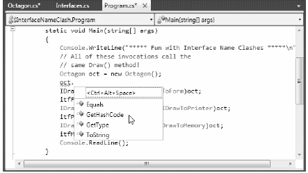

As shown earlier in this chapter, a single class or structure can implement any number of interfaces. Given this, there is always the possibility you may implement interfaces that contain identical members, and therefore have a name clash to contend with. To illustrate various manners in which you can resolve this issue, create a new Console Application named InterfaceNameClash. Now design three interfaces that represent various locations to which an implementing type could render its output:
// Draw image to a Form. public interface IDrawToForm { void Draw(); } // Draw to buffer in memory. public interface IDrawToMemory { void Draw(); } // Render to the printer. public interface IDrawToPrinter { void Draw(); }
Notice that each interface defines a method named Draw(), with the identical signature (which happen to be no arguments). If you now wish to support each of these interfaces on a single class type named Octagon, the compiler would allow the following definition:
class Octagon : IDrawToForm, IDrawToMemory, IDrawToPrinter { public void Draw() { // Shared drawing logic. Console.WriteLine("Drawing the Octagon..."); } }
Although the code compiles cleanly, we do have a possible problem. Simply put, providing a single implementation of the Draw() method does not allow us to take unique courses of action based on which interface is obtained from an Octagon object. For example, the following code will invoke the same Draw() method, regardless of which interface you obtain:
static void Main(string[] args) { Console.WriteLine("***** Fun with Interface Name Clashes *****\n"); // All of these invocations call the // same Draw() method! Octagon oct = new Octagon(); oct.Draw(); IDrawToForm itfForm = (IDrawToForm)oct; itfForm.Draw(); IDrawToPrinter itfPriner = (IDrawToPrinter)oct; itfPriner.Draw(); IDrawToMemory itfMemory = (IDrawToMemory)oct; itfMemory.Draw(); Console.ReadLine(); }
Clearly, the sort of code required to render the image to a window is quite different from the code needed to render the image to a networked printer or a region of memory. When you implement several interfaces that have identical members, you can resolve this sort of name clash using explicit interface implementation syntax. Consider the following update to the Octagon type:
class Octagon : IDrawToForm, IDrawToMemory, IDrawToPrinter { // Explicitly bind Draw() implementations // to a given interface. void IDrawToForm.Draw() { Console.WriteLine("Drawing to form..."); } void IDrawToMemory.Draw() { Console.WriteLine("Drawing to memory..."); } void IDrawToPrinter.Draw() { Console.WriteLine("Drawing to a printer..."); } }
As you can see, when explicitly implementing an interface member, the general pattern breaks down to
returnType InterfaceName.MethodName(params)
Note that when using this syntax, you do not supply an access modifier; explicitly implemented members are automatically private. For example, the following is illegal syntax:
// Error! No access modifer! public void IDrawToForm.Draw() { Console.WriteLine("Drawing to form..."); }
Because explicitly implemented members are always implicitly private, these members are no longer available from the object level. In fact, if you were to apply the dot operator to an Octagon type, you would find that IntelliSense does not show you any of the Draw() members (see Figure 9-6).
As expected, you must make use of explicit casting to access the required functionality. For example:
static void Main(string[] args) { Console.WriteLine("***** Fun with Interface Name Clashes *****\n"); Octagon oct = new Octagon(); // We now must use casting to access the Draw() // members. IDrawToForm itfForm = (IDrawToForm)oct; itfForm.Draw(); // Shorthand notation if you don't need // the interface variable for later use. ((IDrawToPrinter)oct).Draw(); // Could also use the "as" keyword. if(oct is IDrawToMemory) ((IDrawToMemory)oct).Draw(); Console.ReadLine(); }
While this syntax is quite helpful when you need to resolve name clashes, you can use explicit interface implementation simply to hide more “advanced” members from the object level. In this way, when the object user applies the dot operator, he or she will see only a subset of the type’s overall functionality. However, those who require the more advanced behaviors can extract out the desired interface via an explicit cast.
Source Code The InterfaceNameClash project is located under the Chapter 9 subdirectory.